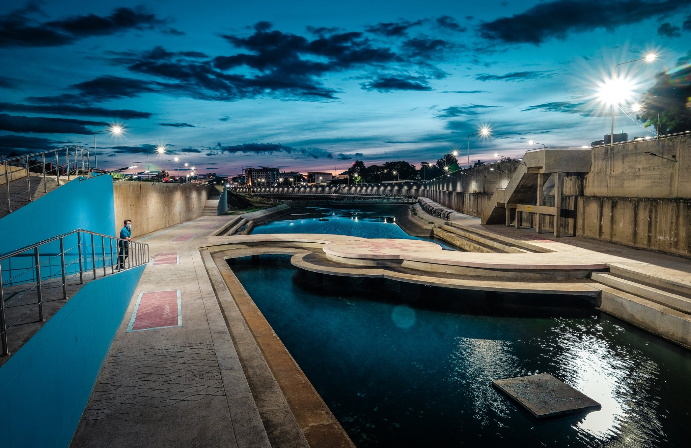

หน้าแรก
ที่พัก
จุดเช็คอิน
ของฝาก
ร้านอาหาร

แนะนำสถานที่ท่องเที่ยว จังหวัดนครสวรรค์
คำขวัญ คำขวัญประจำจังหวัด "เมืองสี่แคว แห่มังกร พักผ่อนบึงบอระเพ็ด ปลารสเด็ดปากน้ำโพ"
Previous
Next
30 ที่เที่ยวจังหวัดนครสวรรค์
เที่ยวไม่หมด ไม่ต้องกลับบ้าน!
ที่พัก
ค้นหาที่พักในจังหวัดนครสวรรค์
จุดน่าเช็คอิน
ค้นหาจุดที่น่าเช็คอินมากที่สุด
ของฝาก
ค้นหาร้านของฝากประจำจังหวัดนครสวรรค์
‹ Previous
1
2
3
21. ทุ่งหินเทิน
เป็นบริเวณของ ทุ่งหญ้าเชิงเขา ที่มีความพิเศษตรงที่จะมี กลุ่มก้อนหินขนาดใหญ่ ตั้งวางซ้อนกันอยู่มากมายหลายจุด และหลายรูปแบบ อยู่ทั่วทั้งบริเวณ แต่มองดูแล้วเหมือนมีคนมาจับหินวางเอาไว้มากกว่าจะเป็นหินที่ธรรมชาติสร้าง แต่ความจริงก็คือเกิดขึ้นมาจากธรรมชาติล้วนๆ ซึ่งหินเหล่านี้ก็ทำให้ที่นี่กลายมาเป็นสวนหินที่นักท่องเที่ยวนิยมมาชมวิวสวยๆ
22. วัดวรนาถบรรพต (วัดเขากบ)
วัดวรนาถบรรพต หรือที่รู้จักกันในชื่อของ วัดเขากบ เป็นวัดเก่าแก่ที่ตั้งอยู่บนยอดเขาและเชิงเขากบ เป็นสถานที่ท่องเที่ยวที่ไม่ได้แค่มาไหว้พระขอพรเท่านั้น แต่ยังสามารถชมวิวเมืองนครสวรรค์ได้แบบสวยงดงาม โดยภายในวัดก็จะมีโบราณวัตถุต่างๆ ให้ได้ชมกัน ทั้ง รอยพระพุทธบาทจำลอง เจดีย์บรรจุพระบรมสารีริกธาตุ เป็นต้น รวมไปถึงมีรูปหล่อพระหลวงพ่อทอง ที่เคารพนับถือของชาวจังหวัดนครสวรรค์
23. อุทยานเทวสถานพระพิฆเนศ
เป็นเทวสถานพระพิฆเนศ ของ จังหวัดนครสวรรค์ โดยภายในจะมีการจัดสวนสวยๆ และมีองค์พระพิฆเนศปางประทานพร องค์ใหญ่สีชมพู ตั้งอยู่ตรงกลาง ซึ่งมองเห็นได้แต่ไกล อีกทั้งยังเต็มไปด้วยเทวรูปเทพและสิ่งศักดิ์สิทธิ์ต่างๆ ทั้ง รูปปั้นพญาจระเข้ ปู่ฤาษีชีวก โกมารภัจจ์ รูปปั้นพระนารายณ์ทรงครุฑ เป็นต้น ให้เราได้สักการะ
24. ชมวาน
รู้สึกเหมือนได้ย้อนวัยกลับไปเป็นเด็กอีกครั้งกับพิพิธภัณฑ์เล็ก ๆ ที่รวบรวมของเก่า ของสะสม ที่หาชมยากมาจัดแสดงให้นักท่องเที่ยวได้เข้าชมกัน ไม่ว่าจะเป็น ของเล่น ตุ๊กตาโบราณ ตู้สลอต รถมอเตอร์ไซค์ หนังสือและภาพเก่า เอาเป็นว่าใครมีโอกาสผ่านมาเที่ยวนครสวรรค์ แนะนำลองหาเวลาว่าง ๆ แวะไปเที่ยวชมกันได้
25. พิพิธภัณฑ์ย้อนรอยอดีตเมืองปากน้ำโพ
ที่เที่ยวนครสวรรค์ที่สร้างขึ้นเพื่อปลูกจิตสำนึกให้ลูกหลานชาวปากน้ำโพ ได้รับรู้ประวัติความเป็นมาของบ้านเกิดตัวเอง โดยภายในมีการจัดแบ่งออกเป็นโซนต่าง ๆ โซนปากน้ำโพมาจากไหน โซนการคมนาคม โซนจำลองเศรษฐกิจร้านค้าที่คู่เมืองปากน้ำโพ โซนป้ายเก่าเล่าเรื่อง โซนเรื่องน่าสนใจที่เกี่ยวข้องกับเมืองปากน้ำโพและศิลปะเมืองจริง
26. วัดนครสวรรค์
วัดเก่าแก่ของจังหวัดนครสวรรค์ที่ภายในพระอุโบสถประดิษฐานหลวงพ่อศรีสวรรค์ พระคู่บ้านคู่เมืองที่มีความสง่างาม และเป็นที่เคารพศรัทธาของชาวบ้าน รวมถึงผู้คนที่ผ่านมาท่องเที่ยวนครสวรรค์ก็จะนิยมแวะมากราบไหว้ขอพร เพื่อเสริมสร้างความเป็นสิริมงคลให้กับตัวเองและครอบครัว
27. วัดจอมคีรีนาคพรต
วัดดังที่ตั้งอยู่บนยอดเขาสูง สามารถมองเห็นทัศนียภาพที่สวยงามของสะพานเดชาติวงศ์ แม่น้ำเจ้าพระยา และเขากบ สำหรับสิ่งที่น่าสนใจของวัดนี้คือ รอยพระพุทธบาทจำลองและพระอุโบสถโบราณ รวมถึงโบราณสถานสำคัญต่าง ๆ อีกมากมาย นอกจากนี้ทุกเดือน 12 ของทุกปีจะมีงานนมัสการและปิดทองรอยพระพุทธบาทจำลอง ซึ่งต่างคึกคักไปด้วยชาวบ้านและผู้คนที่มาเที่ยวนครสวรรค์
28. เป๋าตุงฟาร์ม
ไปถ่ายรูปสวย ๆ ท่ามกลางทุ่งดอกทานตะวันและทุ่งดอกคอสมอสที่พร้อมใจกันเบ่งบานอย่างสวยงาม ตั้งแต่เดือนธันวาคมยาวไปจนถึงปลายเดือนมกราคม โดยความพิเศษของที่นี่ คือ ดอกทานตะวัน มีลำต้นไม่สูงมากนักทำให้สามารถยืนถ่ายภาพคู่ได้อย่างใกล้ชิด นอกจากนี้ทางฟาร์มยังทำสะพานไม้ทอดยาวให้เดินเที่ยวชมกันอย่างทั่วถึง อีกทั้งมีมุมถ่ายรูปและร้านกาแฟน่ารัก ๆ ที่รายล้อมด้วยทุ่งดอกคอสมอสสีสันสวยงาม บอกเลยว่าเป็นที่เที่ยวนครสวรรค์ ที่ควรปักหมุดและแวะไปเที่ยวชมอย่างยิ่ง
29. ทุ่งดอกปอเทืองไร่ธรรมชัย
ตื่นตากับทุ่งดอกปอเทืองบนพื้นที่กว่า 40 ไร่ รายล้อมด้วยภูเขาสูง โดยทุ่งปอเทืองที่นี่จะออกดอกสีเหลืองสะพรั่งตั้งแต่ช่วงเดือนธันวาคมจนถึงกลางเดือนมกราคม ซึ่งทางไร่ได้ทำสะพานไม้ไผ่ให้นักท่องเที่ยวสามารถเดินเที่ยวถ่ายรูปกับทุ่งดอกปอเทืองได้อย่างใกล้ชิด แนะนำเลยว่าเป็นที่เที่ยวนครสวรรค์ที่ไม่ควรพลาด แล้วอย่าลืมเตรียมแต่งชุดเก๋ ๆ รับรองว่ามีรูปสวยไว้โพสต์โซเชียลกันอย่างจุใจแน่นอน
30. ภูทอง
ขับรถเที่ยวนครสวรรค์แล้วรู้สึกเมื่อย ๆ ก็จอดรถพักเหนื่อยกันสักหน่อยกับจุดแวะพักสไตล์วินเทจน่ารัก ๆ ที่มีทั้งร้านอาหาร ร้านกาแฟ ให้แวะเติมพลังและความสดชื่นกันก่อนออกเดินทางต่อ หรือสายชอปปิงก็มีร้านขายเสื้อผ้า เครื่องแต่งกาย และของฝาก รวมถึงมุมเก๋ ๆ สำหรับรูปถ่ายเช็กอินกัน
‹ Previous
1
2
3
Follow Me
จัดทำโดย
นาย ศิลป์ศรุต ก้อนทอง เลขที่15
นาย ณัชพล เอี่ยมมงคล เลขที่8
นาย จิตะบุณย์ ดีพิจารณ์ เลขที่4
Newsletter
Send
.jpg)